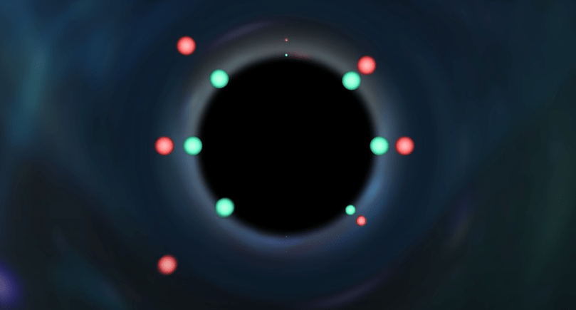
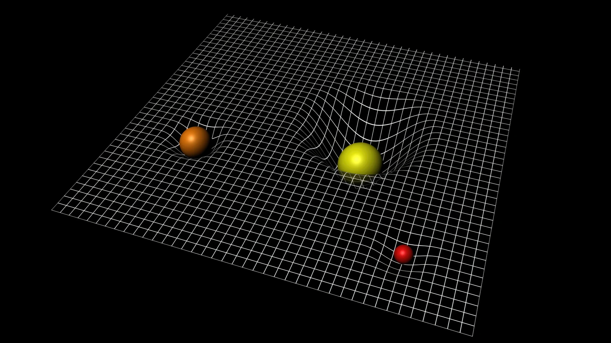
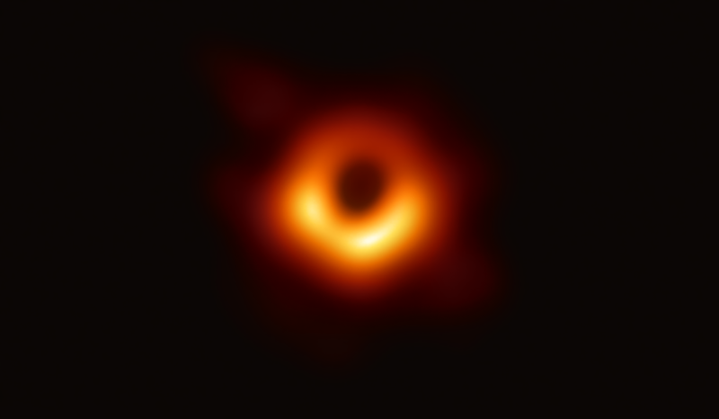

A meteoroidok nagyobbrészt az üstökösökből származnak: az üstökös napközelsége idején a felszínéről elszabadult porrészecskék nem térnek vissza az üstökösre, hanem önállóan keringenek tovább a Naprendszerben.
Arányaiban kisebb részben hoz létre meteoroidokat a kisbolygók ütközésekor keletkező törmelékanyag. A főövbeli és a földsúroló kisbolygók egyaránt lehetnek meteorrajok forrásai, mivel a naprendszerbeli kaotikus mozgások és a szekuláris perturbációk miatt ezek a földpályát keresztező pályára is állhatnak.
A kisbolygók becsapódása nagyobb égitestek felszínébe szintén meteoranyag forrása. Például a Corvidák meteorraj pályája 1178-ig visszakövetve a Holdból indul. A marsi eredetű meteoroidok származása hasonló (ilyen módon került a Marsról a Földre az ALH 84001 meteorit is).
Meteoroidok származhatnak akár más csillagok környezetéből is. Egy csillag erős csillagszele kifújhat a csillagközi térbe apróbb meteoroidokat, amelyek aztán bejuthatnak a Naprendszerbe.
A gammakitörések erős sugárzása, a szupernóvák lökéshullámai egyaránt bejuttathatnak (és be is juttatnak!) a Naprendszer belső tartományaiba Naprendszeren kívüli eredetű meteoroidokat.
A meteorrajok keletkezése
Az általánosan elfogadott elképzelés alapján a meteorrajok főként üstökösökből keletkeznek. Whipple már 1951-ben megállapította, hogy az üstökösből elszabaduló por sebessége 100 és 1000 m/s között van (az üstököshöz képest), ami számottevően kisebb, mint a napközelben járó üstökösök több tízezer m/s sebessége.
Ezért a kiszakadt por tömegegységre vonatkoztatott mozgási energiája és perdülete nem tér el jelentősen az üstökösétől, következésképpen a távozó por lényegében az üstököséhez hasonló pályán halad tovább a Naprendszerben.
A fél nagytengelyben mutatkozó perturbáció például mindössze 1-2 ezreléknyi változást okoz. Az üstökös és a meteoroid keringési idejének különbsége miatt a perihéliumátmenetek időpontjai egyre inkább eltérnek, azaz a meteoroid egyre távolabb kerül a szülőégitesttől.
Mivel minden egyes kiszabadult porszemcse kicsit más pályára kerül, a teljes poranyag idővel el fog oszlani a pálya teljes hosszában, és kiterjedt, folytonos eloszlású burkot alkot az üstököspálya körül. A por eloszlásához a következő fejezetben ismertetendő hatások is nagymértékben hozzájárulnak.
A meteorrajok mozgása a Naprendszerben
Ismeretes, hogy a nagy- és kisbolygók mozgását tisztán gravitációs eredetű hatások összegeként lehet leírni, amely gyakran vezet kaotikus pályához. Üstökösmagok esetében a mozgásegyenlet már bonyolultabb, mert a gravitáció mellett a rakétahatásokat is figyelembe kell venni. Rakétahatásoknak az üstökösből kiáramló por és gáz által okozott perturbáló erőket nevezzük.
Meteoroidok esetében a helyzet még bonyolultabb, ugyanis - bár rakétahatás nincs - sok egyéb tényező van, ami számottevően befolyásolja naprendszerbeli mozgásukat:
gravitációs kölcsönhatások a Nappal;
gravitációs kölcsönhatások a nagybolygókkal;
a napfény sugárnyomása;
a Poynting-Robertson- és Jarkovszkij-Radzijevszkij-hatás;
kölcsönhatás az elektromosan töltött napszéllel;
fékeződés a bolygóközi poron;
fékeződés a semleges interplanetáris gázon;
kölcsönhatás az interplanetáris mágneses térrel.
A napszéllel történő kölcsönhatás (5.) azt jelenti, hogy a meteoroidok a napszél, de főként a Nap ultraibolya sugárzása hatására elektromosan feltöltődnek. Így mozgásuk tárgyalásában a Lorentz-erő fellépte miatt figyelembe kell venni a naprendszerbeli mágneses erőtereket.
A mágneses térrel történő kölcsönhatás (8.) emellett a vasból, nikkelből, kobaltból álló, tehát mágnesezhető anyagú szemcsék esetében is lényeges lehet.
Az interplanetáris és az intersztelláris porral kapcsolatban a Galileo és az Ulysses űrszondák mérései szerint a Jupiter kiterjedt magnetoszférája jelentősen módosíthatja a kisebb meteoroidok pályáját, sőt bizonyos feltételek teljesülése esetén a Jupiter és a Szaturnusz maga körüli pályára kényszerítheti ezeket az apró égitesteket.
Minthogy a meteoroidok tömege elhanyagolható a Nap és a bolygók tömegéhez képest, a gravitáció hatása ugyanakkora a nagyobb és kisebb meteoroidokra. Az összes többi nem gravitációs effektus (3-8.) nagysága azonban függ a meteoroid méretétől és esetleg anyagi jellemzőitől is.
A meteorrajok kora
Az üstökösök belső naprendszerbeli élettartamának nagyságrendi becslésére jól használható a következő formula:
\( T_k = \frac{4 R_0 a_2 \sqrt{1 - e^2} \rho_k \lambda_k}{FE_{nap}} \)
ahol \( R_0 \) az üstökös kezdeti sugara, \( \rho_k \) a sűrűsége, \( \lambda_k \) szublimációs hője, \( F \) pedig egy arányszám, amely megmutatja, hogy a Napból érkező hőmennyiség mekkora része fordítódik az üstökös anyagának szublimációjára.
Ennek alapján például a Halley-üstökös mindössze ~224 000 évet él a belső Naprendszerben, utána megszűnik üstökösként létezni, mert elfogy az illó anyaga. A becslés azonban meglehetősen pontatlan, mert a Halley-üstökös pályája – és rendszerint a többié is – kaotikus, így \( a \) és \( e \) időben változó mennyiség.
Jones, McIntosh és Hawkes számításai szerint egy meteorraj életkora szülőüstököse belső naprendszerbeli élettartamától, és az üstökösből kibocsátott por mennyiségének az üstökös tömegéhez viszonyított \( p \) arányától a következő szerint függ:
\( T_m = T_k (1 - \sqrt[3]{1 + 4p}) \)
A meteorraj életkorának meghatározásához ezek szerint elegendő, ha ismerjük a szülőégitest tömegét, és meghatározzuk a raj jelenlegi tömegét. Ilyen jellegű vizsgálatokból az Orionidák életkorára mindössze 23 000 évet kaptak.
Ez a Naprendszer korának csak öt milliomod része. A meteorrajok tehát – bár mindig jelen vannak – csak pillanatszerű epizódok a Naprendszer életében!
Fekete lyukak – az univerzum különös részei, amik mindent elnyelnek ami a közelükbe kerül, és sosem engedik azt megszökni.
Még a fény sem távozhat belőlük, ezért korom feketék; mégis, néhány érdekes dolgot azért tudunk róluk. Következzen öt különös tény a fekete lyukakról.
Egyesek szerint a tények néha minden képzeletet felülmúlóan furcsák. A megállapítás semmi másra sem igazabb, mint a fekete lyukakra.
A fekete lyukak nem kimondottan lyukak a szó szoros értelmében, hanem inkább bizonyos területek az űrben, melyekbe ha valami belép, többé nem léphet ki onnan.
Valaha minden fekete lyuk egy csillag volt: hatalmas, nagyon nehéz, és gázok égetésével tartott ellent a erős gravitációjának. Mikor élete végén kifogyott ezekből a gázokból, többé nem tudott ellenállni, és összeomlott a saját gravitációja alatt.
Ekkor a csillag egésze egyetlen kicsi pontba sűrűsödött össze, ahol akkora gravitáció jött létre, hogy azt semmi sem tudta legyőzni, ami a közelébe kerül. Létrejött a fekete lyuk, amelynek belsejéből semmi, még a fény sem távozhat.
Már évszázadokkal ezelőtt felmerült a létezésük
Az első fekete lyukakról szóló írásos forrás szerint John Michell brit természetfilozófusban merült fel először a fekete lyukak ötlete 1783-ban.
Ekkor még nem így nevezték őket: Michell a sötét csillag kifejezést használta, ugyanis hipotézise szerint egyes csillagok az univerzumban annyira nehezek lehettek, hogy a fény sem tudta legyőzni a gravitációjukat.
Ötletét arra a tényre alapozta, hogy ha például egy ágyúgolyót kilövünk az égbe, egy idő után lelassul, és visszaesik. Ez a Föld gravitációja miatt történik, az ugyanis nagyobb erővel húzza vissza az ágyúgolyót, mint amilyen sebesen mozog a tárgy.
Azonban, ha az ágyúgolyó meghaladna egy bizonyos sebességet, az úgynevezett szökési sebességet, akkor kiszabadulna a Föld vonzásából. Ez a szökési sebesség minden égitesten más, mert az adott objektum tömegétől függ.
Mivel egy fekete lyuk hihetetlenül nehéz, Michell elképzelése szerint belsejében a szökési sebesség nagyobb lenne a fénysebességnél, ezáltal a fény sem jutna ki onnan.
A sötét csillag elnevezés később egyébként fagyott csillagra módosult, utalva ezzel a fekete lyukak keletkezésére, majd 1964-ben használták először a jelenlegi nevüket.
Valami mégiscsak kijön belőlük
A fekete lyukakkal kapcsolatban sokáig az volt a konszenzus, hogy semmi, de semmi sem távozhat belőlük. Stephen Hawking ezzel szemben érdekes felfedezésre jutott 1974-ben, miközben a kvantummechanika elméletének segítségével próbálta vizsgálni a fekete lyukakat.
Számításai szerint (melyeket az eredményen megütközve többször is megismételt) a mindent elnyelő, rejtélyes objektumok sugárzást bocsátottak ki: ez a Hawking sugárzás. Hawking a Rövid válaszok a nagy kérdésekre című művében leegyszerűsítve magyarázza el a jelenséget.
A kvantummechanika szerint az univerzum tele van a semmiből előbukkanó részecskékkel, melyek megjelenésekor egy anti-részecske pár is megjelenik. A pozitív (+) részecske nyomban össze is ütközik a negatív (-) anti-részecskével, és a pár ezáltal megszűnik létezni.
Abban az esetben azonban, ha egy részecske – anti-részecske pár egy fekete lyuk határán jelenik meg, a pár egyik tagja beleeshet a fekete lyukba, míg a másik tagja megmenekülhet. Ha a pozitív tag menekül meg, a külső szemlélő számára úgy tűnik, mintha a fekete lyuk maga termelt volna egy részecskét.
Sőt, mivel a negatív tag egy anti-részecske, a fekete lyukba beesve elvesz annak energiájából. Hawking szerint idővel a fekete lyuk veszíthet az energiájából és ezáltal a súlyából, végül pedig akár meg is szűnhet létezni.
Azonban ennek időtartama valószínűleg meghaladná az univerzum jelenlegi korát, vagyis egyelőre még nem következhetett be.
Ami a Hawking sugárzást illeti, bár a számítások helyesnek tűnnek, gyakorlati módszerekkel még nem igazolható a létezése. Ehhez sokkal fejlettebb műszerekre lenne szükségünk, így a bizonyíték még várat magára.

Hawking-sugárzás: a részecskepár egyik tagja a fekete lyukba esik, a másik megmenekül.
Igazat adtak Einsteinnek
Albert Einstein 1915-ben készítette el az általános relativitáselméletét. Ebben egy igen hihetetlen állítást tett: a három térbeli dimenzióból, és a negyedik idődimenzióból álló téridő nem sík, hanem görbült.
Görbületét a benne lévő objektumok (pl. bolygók, csillagok, fekete lyukak) okozzák, amik képesek más objektumokat, vagy éppen a fényt eltéríteni az útjukról.
A téridő görbületét valahogy úgy kell elképzelni, mintha egy kifeszített lepedő közepére valami súlyt helyeznénk, ettől létrejönne egy mélyedés, és bármilyen tárgy, amit ezután a lepedőre tennénk, a mélyedés felé mozogna.
A Földet a Nap által létrehozott mélyedés tartja a pályáján, a Holddal pedig a Föld által képzett mélyedés teszi ugyanezt. Ha valamilyen változás éri a téridő szerkezetét, akkor fodrozódni kezdhet, ugyanúgy mint a víztükör, ezáltal gravitációs hullámok jöhetnek létre.
Einstein jóslata a gravitációs hullámok létezéséről több mint száz évvel később bizonyosodott be minden kétséget kizáróan.
2016-ban ugyanis a Laser Interferometer Gravitational-wave Observatory (LIGO) detektorai a történelemben először észleltek gravitációs hullámokat, amelyeket nem más hozott létre, mint egy fekete lyuk pár.
Ez egészen pontosan két egymás körül keringő fekete lyuk volt, melyek egymás hosszas kerülgetése után összeolvadtak egyetlen gigászi fekete lyukká. Forgás közben olyan erős gravitációs hullámokat gerjesztettek, hogy még a földi detektorok is észlelték őket. Einstein elmélete tehát helyes volt: a téridő görbült, és léteznek gravitációs hullámok.

A téridő görbületének ábrázolása
Lebontják a fizika törvényeit
Stephen Hawking a Rövid válaszok a nagy kérdésekre című művében beszél bővebben a fekete lyukak furcsa tulajdonságairól. Kifejti, hogy az általunk ismert fizika törvényei egyszerűen megszűnnek létezni a fekete lyukak belsejében.
Már a keletkezésük is problémás: egy csillag összeomlásakor annak teljes egésze egyetlen pontba koncentrálódik, és abban a pontban végtelenül nagy az anyag sűrűsége. Ezt hívják szingularitásnak.
Hogy lehet valaminek a sűrűsége végtelenül nagy? Lehetetlenül hangzik, ezért Albert Einstein például el is utasította az ötletet. Más tudósok, mint Robert Oppenheimer vagy Roger Penrose viszont bebizonyították, hogy a szingularitás igenis létrejön.
Ez azért problémás, mert a szingularitásban végtelenül nagy lenne a téridő görbülete, és mind a tér, mindpedig az idő megszűnne létezni.
Az úgynevezett információvesztés egy másik furcsaság ami a fekete lyukakra jellemző. Mivel a fény nem tud távozni belőlük, nem láthatjuk, mi van a belsejükben. Sőt, látszólag semmilyen információval nem rendelkezünk arról, hogy mi esett beléjük.
Ha elnyelne minket egy fekete lyuk, az olyan lenne, mintha megszűnnénk létezni: az összes minket alkotó információ elveszne. Ez ellentmond a fizika törvényeivel kapcsolatos elképzeléseinknek, ezért a jelenséget információs paradoxonnak is nevezik.
Bár a tudósok nagy erőkkel keresnek egy alkalmazható modellt, amelyben a fekete lyukba hullott információ nem vész el, a rejtély máig megoldatlan.

A Messier 87 galaxis közepében található fekete lyuk
Választ nyújtanak egy rejtélyre
Világegyetemünk 96%-át olyan anyagok és energiák alkotják, melyeket nem láthatunk: sötét anyag (22%) és sötét energia (74%).
Tudjuk, hogy léteznek, hiszen számos mérés és egyéb bizonyítékok is erre utalnak – például az is, hogy az univerzum bizonyítottan tágul, és ráadásul egyre gyorsabb ütemben.
Ezt valószínűleg az okozza, hogy a sötét energia antigravitációs hatást gyakorol a különböző objektumokra, így mindent egyre távolabb taszít minden mástól. A kérdés, hogy hogyan teszi mindezt, vagy hogy pontosan miből is áll a sötét energia illetve a sötét anyag máig megválaszolatlan marad.
2021-ben azonban érdekes feltevéssel álltak elő a Yale, a Miami Egyetem és az Európai Űrügynökség kutatói: talán miniatűr fekete lyukakat kellene keresnünk szerte az univerzumban.
Úgy gondolják, az ősrobbanás idején egyenetlenül eloszló anyagok kisebb fekete lyukakat hozhattak létre, melyek a mai napig jelen vannak körülöttünk.
Ezek mérete és súlya nem elég jelentős ahhoz, hogy észlelhessük őket, és éppen ezért kiváló sötét anyag jelöltek. Mindezt azonban még be is kell bizonyítani.
A kutatók azt remélik, hogy a James Webb űrtávcső az elkövetkezendő években képes lesz majd megfigyelni a korai univerzum folyamatait, és választ ad kérdésünkre.
Mint láthattuk, a fekete lyukak valóban felülmúlják minden képzeletünket. Mára már bebizonyítottuk a létezésüket, megismertük a keletkezésük módját, láttunk már egymással táncoló fekete lyukakat és fotót is készítettünk róluk, de igen keveset tudunk arról, hogy mit is rejtegetnek határaikon túl.
A fekete lyukak kutatása ezért számos kérdést megválaszolhat, és érdekesebbnél érdekesebb információkat tartogathat még számunkra.
Az első Naprendszeren kívüli bolygó harminc évvel ezelőtti felfedezése óta több ezer exobolygót találtunk. Először csak „csordogáltak” az új exobolygó-jelöltek, ekkor még minden egyes új bolygó híre bejárta a nemzetközi sajtót.
A távcsövek fejlődésével aztán egyre gyakoribbak lettek az új felfedezések, majd a NASA exobolygó-vadász Kepler űrteleszkópjának 2009-es indításával már százával érkeztek az új jelöltek.
A NASA exobolygó archívuma (Exoplanet Archive) pedig mostanra hivatalosan is átlépte az ötezredik exobolygó mérföldkövét.
Jessie Christiansen, a NASA Exoplanet Archive tudományos vezetője még emlékszik rá, amikor a 2000-es évek elején doktoranduszként alig száz ismert exobolygó volt az archívumban.
Christiansen munkájának része, hogy a megerősített bolygókat felrögzíti a hivatalos katalógusba. Ahhoz, hogy egy bolygó hivatalosan is megerősített státuszt kaphasson, több követő mérést végeznek rajtuk, amiket referált folyóiratokban publikálnak.
Az eddig megerősített exobolygók szonifikációja. Az exobolygókat hangjegyeknek feleltetve meg haladhatunk végig a felfedezésükön.
Karikák mutatják az elhelyezkedésüket és pályájuk méretét, a szín pedig a felfedezési módszer típusára utal. Minél alacsonyabb a hang, annál hosszabb, minél magasabb, annál rövidebb idő alatt végeznek el egy keringést a csillaguk körül.
Christiansen munkájának két fő része van, egyrészt vezeti az archívum tudományos csapatát (ami katalogizálja és karakterizálja az exobolygókat), emellett pedig saját maga is exobolygókat keres, illetve vizsgál.
Ő maga is része volt annak a kutatócsoportnak, akiknek a felfedezésével átléptük a bűvös 5000-es számot. Az eredményeik, amikben a NASA K2 küldetés által felfedezett bolygókat validálják, a The Astronomical Journal tudományos folyóiratban fognak megjelenni.
Az alábbiakban Jessie Christiansen interjúját olvashatják a Caltech munkatársaival.
Hogy nézett ki az exobolygók kutatása, mikor először foglalkozni kezdett a témával?
A 2000-es évek eleje tájékán még doktorandusz voltam, ekkor alig száz ismert exobolygó volt. A legtöbbet földi teleszkópokkal a radiális sebesség módszerével fedezték fel.
Ennek során azt észleljük, ahogyan a csillag a körülötte keringő bolygó „rángatása” miatt finoman el-el mozdul. Az első fedési módszerrel felfedezett exobolygóra 2004-ig kellett várni; ilyenkor azt figyeljük, ahogyan a csillaga előtt elhaladó bolygó kitakarja a csillag fényének egy részét (később a Kepler űrtávcső is ezzel a módszerrel keresett bolygókat).
Részben ezért is szerettem volna a pályára lépni – ez egy új, izgalmas tudományterület volt. Akkoriban még a bolygókat extraszoláris bolygóknak neveztük, de idővel népszerűbbé vált a könnyebben kimondható exobolygó kifejezés.
Időről időre megkérdezik tőlem, hogy léteznek-e endobolygók … a válasz, nem.
Milyen az exobolygó kutatás mostanában?
Manapság már szinte átlagosnak számítanak az exobolygók. Ahogyan egy kollégám, David Clardi (NASA Exoplanet Archive vezető kutató) a minap rámutatott, mondhatni a ma élő emberek fele már soha nem élt olyan világban, ahol nem ismertünk exobolygókat.
Az elsőket harminc éve találtuk, a Föld lakosságának medián életkora pedig 29,6. Eszerint statisztikailag az összes élő ember fele ismeri az exobolygókat; ez persze nem jelenti azt, hogy mind pontosan tudják, mik azok, de mikor arról mesélünk másoknak, hogy más csillagok körül keringő bolygókat találtunk, általában azt a választ kapjuk:
Ó, de nem tudtuk mindig is, hogy más csillagok körül is keringenek bolygók?. Nem mindenki emlékszik már, hogy milyen nehéz is volt megtalálni őket!
Az eddig megerősített exobolygók megoszlása típusok szerint.
Milyen távcsövekkel fedezték fel ezt a sok exobolygót?
Földi és űrtávcsövekkel egyaránt dolgoztak, mint például a Kepler, vagy a NASA TESS küldetés. A Kepler kifejezetten nagyot mozdított előre a tudományterületen, nagyjából az eddig megerősített ötezer bolygó kétharmadát fedezte fel.
Emlékszem, amikor a Kepler küldetéshez tartoztam és először láttuk a méréseit. Úgy nézett ki, mint a modelljeink, csak valódi adatokat láttunk. Igazán szép volt!
Hol van ez az 5000 bolygó a galaxisunkban?
Az egyik érdekes tulajdonsága ezeknek a bolygóknak, hogy szinte mind a Naprendszerünk körüli „kis” buborékban található, ahol könnyebb őket észrevenni. Eddig csak a közvetlen szomszédságunkat térképeztük fel, néhány kivétellel. Az ismert ötezer exobolygóból négyezer-kilencszáz tőlünk néhány ezer fényévre található.
Ha ehhez hozzávesszük, hogy harmincezer fényévre vagyunk a saját galaxisunk középpontjától, és az eddigi ismereteink alapján extrapolálunk, hogy még hány ismeretlen exobolygó lehet a galaxisunkban, akkor olyan 100 – 200 milliárd jön ki. Ez elképesztően sok.
Mit lehet tudni a NASA Exobolygó Archívumáról?
Az archívumban követhetőek az ismert exobolygók. Vannak kutatók, akik folyamatosan követik a szakirodalmat és a leközölt új bolygókat, minden paraméterükkel együtt, felrögzítik az archívumba.
Emellett új eszközök fejlesztésén is dolgozunk, amikkel könnyebben böngészhető és vizualizálható az archívum összes adata. Általánosságban az archívum fő feladata az, hogy mindenki számára elérhetővé tegye az exobolygók adatait.
Milyen típusú exobolygók vannak a legutóbbi kupacban?
Ebben hatvanöt új bolygót jelentettek be, hatvanat a mi csoportunk méréseiből és öt másikat. Többnyire szuper-föld vagy szub-neptunusz típusúak, amik nagyobbak a Földnél, de kisebbek a Neptunusznál és valószínűleg kőzet és gáz keverékeiből állhatnak.
Néhány Jupiterhez hasonló méretű és szuper-jupiter is van közöttük. Mindegyik gyorsan kerüli meg a központi csillagát, kevesebb, mint 41 nap alatt, tehát igen forróak is, mert közel keringenek. Van közöttük egy olyan bolygórendszer is, ami eléggé hasonlít a híres TRAPPIST-1 rendszerhez.
Ebben öt kisebb bolygó kering a K2-384 jelű kicsi, hűvös vörös törpecsillag körül. Két Földhöz hasonló méretű exobolygót is bejelentettek, de ezeken nagyon magas, 600 K körüli hőmérsékletek uralkodnak, úgyhogy nem lakhatóak.
Találtak továbbá exobolygót erősen fémszegény csillag körül is, amiben szokatlanul kevés nehéz elem található. Ez számomra különösen érdekes, ugyanis az egyik aktuális kutatásom témája, hogy mennyire alacsony fémtartalmú csillagok körül találhatunk még bolygókat.
A mostani elképzelések szerint a bolygók keletkezéséhez nehéz elemekre van szükség, hogy a porból össze tudjanak állni, majd gázt gyűjteni maguk köré; az, hogy pontosan mennyi nehéz elemre van szükség, még nem dőlt el.
Mi várható az exobolygók kutatásában a jövőben?
Az egyik érdekes kérdés a populációk tanulmányozása. Most már elég sok exobolygót ismerünk, úgyhogy igazán bele tudunk mélyedni az egyes típusok különféle keletkezéseibe.
Például a K2 projektben a bolygóval rendelkező csillagok korát vizsgálják. Fiatal csillagoktól közepesen fiatal csillagokig is vizsgálódunk, ezzel arra keresve a választ, milyen sokáig tart a bolygókeletkezés folyamata egy csillag életében.
Minél több bolygónk van, annál több válaszunk is. Persze, már akkor is végeztek statisztikai vizsgálatokat, amikor még csak pár tucat exobolygót ismertünk. Akkoriban úgy álltak hozzá, hogy Hé, van hat exobolygónk! Mit lehet velük kezdeni?.
Nos, most már van ötezer! A jövő küldetéseivel pedig, mint a NASA Nancy Grace Roman űrteleszkópja, vagy az ESA PLATO küldetése, ennél még sokkal többet fogunk felfedezni.